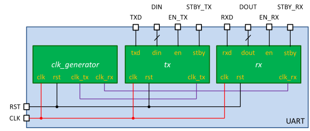
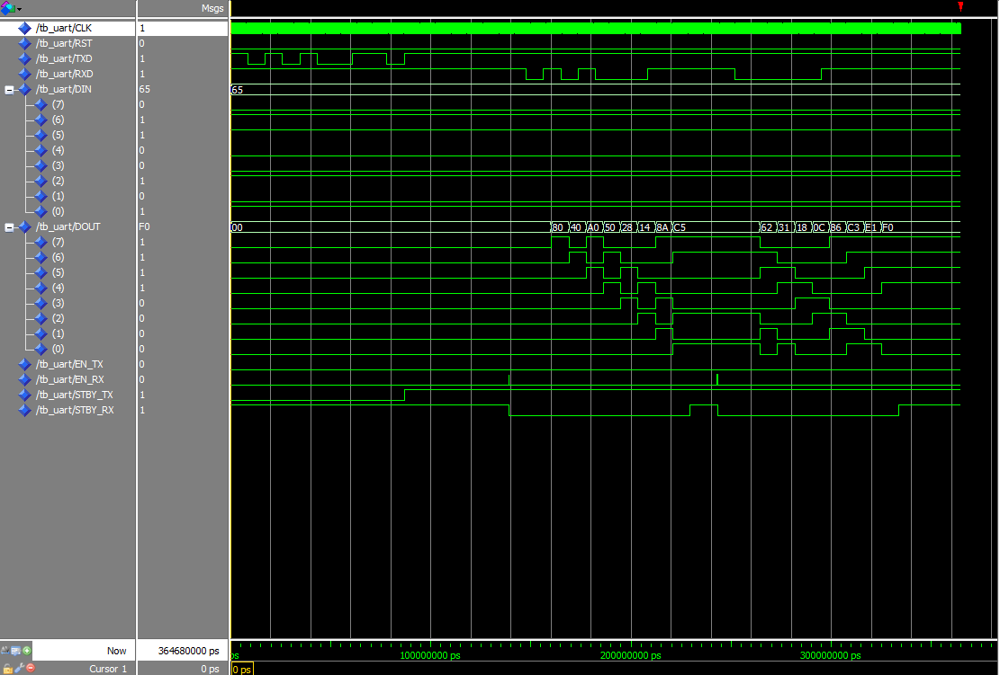

VHDL記述例 - UARTによるシリアル通信
はじめに
本ページでは，調歩同期方式シリアル通信を行うためのUART (Universal Asynchronous Receiver Transmitter)のVHDL記述例を紹介します． UARTをFPGAに実装することにより，D-sub9ピンのシリアルケーブルやUSB-シリアル変換モジュールを経由して，PCとFPGAなどの間でRS-232C準拠のシリアル通信が実現できます．
下記の環境で動作を確認しておりますが，動作を保証するものではありません． ソースコードは自己責任の上でご利用ください．
| OS | Microsoft Windows 7 Professional x64 Service Pack 1 |
|---|---|
| Quartus II | Altera Quartus II 12.0sp2 Web Edition |
| ModelSim | Mentor Graphics ModelSim-Altera Starter Edition v10.0d Service Pack |
| FPGA Board | Terasic DE0 (Altera Cyclone III EP3C16F484C6N) |
調歩同期方式シリアル通信とUART（準備中）
調歩同期方式シリアル通信とUARTについて簡単に解説する予定です．
VHDL記述例
はじめに
今回紹介するUARTのVHDL記述例（以降では，UARTモジュールと呼びます）は，下図に示すような構成になっています． 最上位モジュール「UART」は，その下にクロック生成モジュール「clk_generator」， シリアル送信モジュール「tx」およびシリアル受信モジュール「rx」を内包しています． UARTモジュールは，これら下位モジュールの入出力信号を結線しています．
{kind=link}
下表に各外部入出力信号の名称と機能をまとめました．入力クロックの周波数は50MHzです．
| Node Name | Direction | Description |
|---|---|---|
| CLK | Input | クロック入力．周波数は50MHzを想定 |
| RST | Input | リセット動作: 1，通常動作: 0 |
| TXD | Output | シリアル通信（送信） |
| RXD | Input | シリアル通信（受信） |
| DIN | Input | 送信データ入力 |
| DOUT | Output | 受信データ出力 |
| EN_TX | Input | 送信有効: 1，送信無効: 0 |
| EN_RX | Input | 受信有効: 1，受信無効: 0 |
| STBY_TX | Output | 待機中（初期状態）: 1，送信中: 0 |
| STBY_RX | Output | 待機中（初期状態）: 1，受信中または受信待機中: 0 |
下表に通信仕様をまとめました．
| ビットレート | 115200bps |
|---|---|
| データビット | 8bit |
| パリティビット | なし |
| ストップビット | 1bit |
| フロー制御 | なし |
最上位モジュール「UART」（UART.vhd）
最上位モジュール「UART」は，その下にクロック生成モジュール「clk_generator」， シリアル送信モジュール「tx」およびシリアル受信モジュール「rx」を内包しています． UARTモジュールは，これら下位モジュールの入出力信号を結線しています．
--------------------------------------------------------------------------------
-- UART Interface Unit
-- Start-stop synchronous communication (RS-232C)
-- 115200bps, 8bit, no-parity, 1stop-bit
--------------------------------------------------------------------------------
library IEEE;
use IEEE.std_logic_1164.all;
-- top module
entity UART is port(
CLK: in std_logic;
RST: in std_logic;
TXD: out std_logic;
RXD: in std_logic;
DIN: in std_logic_vector(7 downto 0);
DOUT: out std_logic_vector(7 downto 0);
EN_TX: in std_logic;
EN_RX: in std_logic;
STBY_TX: out std_logic;
STBY_RX: out std_logic);
end UART;
architecture rtl of UART is
signal CLK_TX: std_logic;
signal CLK_RX: std_logic;
component clk_generator port(
clk: in std_logic;
rst: in std_logic;
clk_tx: out std_logic;
clk_rx: out std_logic);
end component;
component tx port(
clk: in std_logic;
rst: in std_logic;
clk_tx: in std_logic;
txd: out std_logic;
din: in std_logic_vector(7 downto 0);
en: in std_logic;
stby: out std_logic);
end component;
component rx port(
clk: in std_logic;
rst: in std_logic;
clk_rx: in std_logic;
rxd: in std_logic;
dout: out std_logic_vector(7 downto 0);
en: in std_logic;
stby: out std_logic);
end component;
begin
uclk_generator: clk_generator port map(
clk => CLK,
rst => RST,
clk_tx => clk_tx,
clk_rx => clk_rx);
utx: tx port map(
clk => CLK,
rst => RST,
clk_tx => clk_tx,
txd => TXD,
din => DIN,
en => EN_TX,
stby => STBY_TX);
urx: rx port map(
clk => CLK,
rst => RST,
clk_rx => clk_rx,
rxd => RXD,
dout => DOUT,
en => EN_RX,
stby=> STBY_RX);
end rtl;
クロック生成モジュール「clk_generator」（clk_generator.vhd）
クロック生成モジュール「clk_generator」は，シリアル通信に必要なクロックを生成し，シリアル送信モジュールおよびシリアル受信モジュールに供給します．
library IEEE;
use IEEE.std_logic_1164.all;
use IEEE.std_logic_unsigned.all;
-- clock generator module
entity clk_generator is port(
clk: in std_logic;
rst: in std_logic;
clk_tx: out std_logic;
clk_rx: out std_logic);
end clk_generator;
architecture rtl of clk_generator is
-- (1 / 115200bps) / (1 / 50MHz) = 434
signal cnt_tx: integer range 0 to 433;
-- (1 / 115200bps) / (1 / 50MHz) / 16 = 27
signal cnt_rx: integer range 0 to 26;
begin
clk_tx <= '1' when(cnt_tx = 433) else '0';
process(clk, rst) begin
if(rst = '1') then
cnt_tx <= 0;
elsif(clk'event and clk = '1') then
if(cnt_tx = 433) then
cnt_tx <= 0;
else
cnt_tx <= cnt_tx + 1;
end if;
end if;
end process;
clk_rx <= '1' when(cnt_rx = 26) else '0';
process(clk, rst) begin
if(rst = '1') then
cnt_rx <= 0;
elsif(clk'event and clk = '1') then
if(cnt_rx = 26) then
cnt_rx<= 0;
else
cnt_rx <= cnt_rx + 1;
end if;
end if;
end process;
end rtl;
シリアル送信モジュール「tx」（tx.vhd）
シリアル送信モジュール「tx」は，シリアル通信における送信機能を提供します．
library IEEE;
use IEEE.std_logic_1164.all;
use IEEE.std_logic_unsigned.all;
-- transmitter module
entity tx is port(
clk: in std_logic;
rst: in std_logic;
clk_tx: in std_logic;
txd: out std_logic;
din: in std_logic_vector(7 downto 0);
en: in std_logic;
stby: out std_logic);
end tx;
architecture rtl of tx is
signal en_tmp: std_logic;
signal cnt_bit: integer range 0 to 9;
signal buf: std_logic_vector(7 downto 0);
begin
process(clk, rst) begin
if(rst = '1') then
txd <= '1';
en_tmp <= '0';
stby <= '1';
cnt_bit <= 0;
buf <= (others => '0');
elsif(clk'event and clk = '1') then
if(en = '1') then
en_tmp <= '1';
stby <= '0';
buf <= din;
elsif(clk_tx = '1' and en_tmp = '1') then
case cnt_bit is
when 0 =>
txd <= '0';
cnt_bit <= cnt_bit + 1;
when 1 | 2 | 3 | 4 | 5 | 6 | 7 | 8 =>
txd <= buf(0);
buf <= '1' & buf(7 downto 1);
cnt_bit <= cnt_bit + 1;
when others =>
txd <= '1';
en_tmp <= '0';
stby <= '1';
cnt_bit <= 0;
end case;
end if;
end if;
end process;
end rtl;
シリアル受信モジュール「rx」（rx.vhd）
シリアル受信モジュール「rx」は，シリアル通信における受信機能を提供します．
library IEEE;
use IEEE.std_logic_1164.all;
use IEEE.std_logic_unsigned.all;
-- receiver module
entity rx is port(
clk: in std_logic;
rst: in std_logic;
clk_rx: in std_logic;
rxd: in std_logic;
dout: out std_logic_vector(7 downto 0);
en: in std_logic;
stby: out std_logic);
end rx;
architecture rtl of rx is
type state_type is (idle, detect, proc, stopbit);
signal state: state_type;
signal dout_reg: std_logic_vector(7 downto 0);
signal en_tmp: std_logic;
signal cnt_bitnum: integer range 0 to 7;
signal cnt_bitwidth: integer range 0 to 15;
signal buf: std_logic;
begin
dout <= dout_reg;
process(clk, rst) begin
if(rst ='1') then
buf <= '0';
elsif(clk'event and clk = '1') then
buf <= rxd;
end if;
end process;
process(clk, rst) begin
if(rst ='1') then
en_tmp <= '0';
stby <= '1';
dout_reg <= (others => '0');
cnt_bitnum <= 0;
cnt_bitwidth <= 0;
state <= idle;
elsif(clk'event and clk = '1') then
if(en = '1') then
en_tmp <= '1';
stby <= '0';
end if;
if(en_tmp = '1') then
case state is
when idle =>
if(buf = '0') then
cnt_bitnum <= 0;
cnt_bitwidth <= 0;
state <= detect;
else
state <= state;
end if;
when detect =>
if(clk_rx = '1') then
if(cnt_bitwidth = 7) then
cnt_bitwidth <= 0;
state <= proc;
else
cnt_bitwidth <= cnt_bitwidth + 1;
state <= state;
end if;
else
state <= state;
end if;
when proc =>
if(clk_rx = '1') then
if(cnt_bitwidth = 15) then
if(cnt_bitnum = 7) then
cnt_bitnum <= 0;
state <= stopbit;
else
cnt_bitnum <= cnt_bitnum + 1;
state <= state;
end if;
dout_reg <= rxd & dout_reg(7 downto 1);
cnt_bitwidth <= 0;
else
cnt_bitwidth <= cnt_bitwidth + 1;
state <= state;
end if;
else
state <= state;
end if;
when stopbit =>
if(clk_rx = '1') then
if(cnt_bitwidth = 15) then
en_tmp <= en;
state <= idle;
else
cnt_bitwidth <= cnt_bitwidth + 1;
state <= state;
end if;
else
state <= state;
end if;
when others =>
en_tmp <= '0';
state <= idle;
end case;
elsif(en = '0' and en_tmp = '0') then
stby <= '1';
end if;
end if;
end process;
end rtl;
テストベンチとRTLシミュレーション
テストベンチ記述例
以下は，UARTモジュール用のテストベンチ記述例（tb_UART.vhd）です． テストベンチ記述，Quartus IIおよびModelSimを用いたRTLシミュレーションの方法については，加算器のRTLシミュレーションが参考になると思います．
library IEEE;
use IEEE.std_logic_1164.all;
entity tb_UART is
end tb_UART;
architecture rtl of tb_UART is
signal CLK: std_logic;
signal RST: std_logic;
signal TXD: std_logic;
signal RXD: std_logic;
signal DIN: std_logic_vector(7 downto 0);
signal DOUT: std_logic_vector(7 downto 0);
signal EN_TX: std_logic;
signal EN_RX: std_logic;
signal STBY_TX: std_logic;
signal STBY_RX: std_logic;
-- global clock period
constant CP: time := 20 ns;
-- bit rate (1 / 115200bps)
constant BR: time := 8680 ns;
component UART port(
CLK: in std_logic;
RST: in std_logic;
TXD: out std_logic;
RXD: in std_logic;
DIN: in std_logic_vector(7 downto 0);
DOUT: out std_logic_vector(7 downto 0);
EN_TX: in std_logic;
EN_RX: in std_logic;
STBY_TX: out std_logic;
STBY_RX: out std_logic);
end component;
begin
uUART: UART port map(
CLK => CLK,
RST => RST,
TXD => TXD,
RXD => RXD,
DIN => DIN,
DOUT => DOUT,
EN_TX => EN_TX,
EN_RX => EN_RX,
STBY_TX => STBY_TX,
STBY_RX => STBY_RX);
-- clock signal
process begin
CLK <= '0';
wait for CP / 2;
CLK <= '1';
wait for CP / 2;
end process;
process begin
RST <= '1'; RXD <= '1'; DIN <= x"ff"; EN_TX <= '0'; EN_RX <= '0';
wait for CP; RST <= '0';
wait for CP; DIN <= x"65";
wait for CP; EN_TX <= '1';
wait for CP; EN_TX <= '0';
wait for (16 * BR); EN_RX <= '1';
wait for CP; EN_RX <= '0';
wait for BR; RXD <= '0'; -- start-bit
wait for BR; RXD <= '1'; -- data-bit 8'hc5
wait for BR; RXD <= '0';
wait for BR; RXD <= '1';
wait for BR; RXD <= '0';
wait for BR; RXD <= '0';
wait for BR; RXD <= '0';
wait for BR; RXD <= '1';
wait for BR; RXD <= '1';
wait for BR; RXD <= '1'; -- stop-bit
wait for (2 * BR); EN_RX <= '1';
wait for CP; EN_RX <= '0';
wait for BR; RXD <= '0'; -- start-bit
wait for BR; RXD <= '0'; -- data-bit 8'hf0
wait for BR; RXD <= '0';
wait for BR; RXD <= '0';
wait for BR; RXD <= '0';
wait for BR; RXD <= '1';
wait for BR; RXD <= '1';
wait for BR; RXD <= '1';
wait for BR; RXD <= '1';
wait for BR; RXD <= '1'; -- stop-bit
wait for (4 * BR); RST <= '1';
assert false report "Simulation End." severity failure;
end process;
end rtl;
RTLシミュレーション結果
下図に，上記のテストベンチ記述例を使用したRTLシミュレーションの結果を示します．
{kind=link}
Terasic DE0に，UARTによるシリアル通信を実装するためには
Terasic DE0にはD-sub9端子が実装されておらず，シリアル通信を行うためには， シリアルケーブルの作成やUSB-シリアル変換モジュールの購入などが必要となります． 下記にこれらの実装例をまとめましたので，ご一読ください．